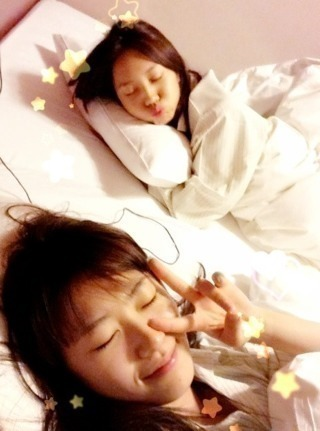
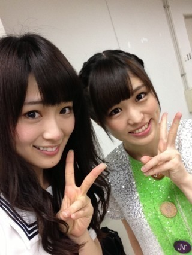

2013/0919Thu（´-`）.｡oO(か ずみん×220
バケラッタ(*´ω`*)ﾉ
いつも応援ありがとうございます！
昨日仙台から帰って来たよ〜♡
まいやん、始球式緊張したね(´;ω;`)
かっこよかったよ！！
綺麗な真っ直ぐな球でした。
私だったらあんなには飛びません(T_T)
お疲れ様ねぇ>_<
来てくださったみなさん、
ありがとうございました！
東北楽天ゴールデンイーグルスの皆さん、
ありがとうございました！
牛タン美味しかった(*∩ω∩) ♡
やわらかかったよ〜！
食べすぎて次の日胃がもたれた...
お部屋はじょーさんと一緒♭

じょーさんキャラクターみたいで
なんかかわゆい( ´ ▽ ` )
ろっちーもお部屋に来てくれたけど
流石に3人じゃ人狼はできなかった！
でも楽しかったです♡
朝帰って来て、
(朝からずんだパフェ食べた)
ひなちゃんと
ミュージカル セーラームーン
ミュージカル セーラームーン
観てきました〜！！
今までDVDでしか
見たことなくて...
ずっと見たいなって
思ってました...(´;ω;`)♡
だから8年ぶりにやると知った時は
行きたくてしょうがない衝動に
駆られてしまって！！！
もう楽しかったですヽ(´>∀<`*)ﾉ
勉強にもなりました！
マーキュリーは私の
永遠のアイドル...( ∩ˇωˇ∩)♡♡
青って色好きだし性格も好きっ！
本当素敵でしたっ♪
ありがとうございましたっ！！
人を魅了する見せ方をちょっと
学んだ気がするので、
これから生かしていきたいです！！
最後にずっと載せてなかった
かりんちゃんとの写真♪

いつ載せよういつ載せようって
考えてたらなかなかタイミングが
合わなくて>_<
自分のファンだった子が
アイドルになってくれた。
実は夢だったんです。
私も山口百恵さん見て、
アイドルになりたいって思ったから...
私もそんな、女の子に
私もそんな、女の子に
夢を与えられる存在に
なりたいって思ってました。
まさかこんなに早く叶うなんて
うれしいっす。涙
かりんちゃんが私の夢を
1つ叶えてくれました(*´ｰ`*人)
ありがとう。
しっかり者のかりんちゃん、
一緒に頑張ろうね！！
ではではヽ(´>∀<`*)ﾉ
2013/09/19 13:30


コメント(429)
まいやんすごかった！
かずみんも頑張って！
仙台での楽天の応援、お疲れ様でした＼(^o^)／
僕もあの球場で見てました！！
仙台は楽しかったですか？？
楽天応援してくれたおかげで勝ちましたね！！
ありがとうございました(*^o^*)
牛タンにずんだと仙台名物いっぱい食べたみたいでよかった！
今日はこの辺で(o^^o)
頑張りたいですね♪
セーラームーンのミュージカルとか最高じゃん♪
まいやんよかったらしいですね！
よかったです(￣∇￣*)ゞ
てかノギビンゴちょーガッカリしちゃいました( ´△｀)
まぁDVD買って見ますよー(￣∇￣*)ゞ
バケラッター！
ジョーさん仕上がってるね(笑)(笑)
代々木昼夜当選したよー♪
最近急に涼しくなってきたから体調崩さないように頑張ってね♪ヽ(´▽｀)/
始球式成功してよかったね！！
成功するか不安だったよ~_~;笑
セーラームーンって見たことないな(^^;;
俺はアニメあんまり見ないんだよね笑
かりんちゃんとの写真保存しとく(￣▽￣)
以上
ってことでまた〜
アメイジング*\(^o^)/*
スタードラフト会議みたよ！
バケラッタ！！
はじめまして かずみんヽ(´▽｀)/
高１のゆーーちです。
最近かずみんキテます！
多分、じゅんこちゃんの仕業やと思います
かずみん推してもいいですか？
では
ゆーーち。
すごいわ(笑)
宮城には行けなかったけど
パソコンの生放送で
live映像見てました！
元気なところが見れてよかったです！
BSで握手しにいきます！
待っててください！
毎日お疲れ様( ´ ▽ ` )ﾉ
セーラームーン(ﾟoﾟ;;
懐かしい(´Д` )
昔セーラームーンごっことかやらされたな(´Д` )笑
ついに明後日だ(´Д` )
握手会\(//∇//)\
楽しみ過ぎる\(//∇//)\
仕事終わったらまたコメントします♪(´ε｀ )
んぢゃぁまず♪(´ε｀ )
水色時計のまっきぃでした＼(^o^)／
バケラッタ！！！
楽天戦おつかれ！！！
ニコ生で見てたけど
ガールズルール終わったあと
まいやんの後に喋ったのって
多分かずみんだよね！？
アメイジングだったよ！！
安定の飴鞭きたね！！
セーラームーンかー・・・
あんまり見てないから
よくわからないなーwww
でも
ずっと見れなかったミュージカル！？
見れてよかったね！！！
ではでは
hayato・たまご・スマイルマンでした♪
仙台行ったんだ(°_°)
牛タン良いよね！！
太助って言う店がオススメ
仙台の牛タンは本当に分厚くておいしい！
スミマセン、つい熱くなりました笑
仙台はおばあちゃんの家があるからよく行くよ(￣▽￣)
かりんちゃんは一実さんのファンだったのね(°_°)
それってすごい嬉しいよね。
自分が憧れてたからこそ、その自分に憧れて入ってきてくれるって
これからもみんなに夢を届けてください(￣▽￣)
ではまた
仙台でのパフォーマンスお疲れさまでした！始球式惜しかったですけど、素晴らしい球でしたね！
牛タンにずんだパフェ…満喫してますね（笑）朝からパフェとかすごい！
いい後輩を授かりましたね！かりんさんと一緒にこれからもがんばりましょう！
青、僕も好きです！一緒ですね！
今日もお疲れさまでした！
お疲れさまーぬーど(<・ω・>)
ずんだパフェ食いてえ。
念願のミュージカル観れて良かったね。
かずみんの夢、一杯叶えましょうね。
もう、沢山、叶ったものも有ると思いますが、これからも、一つ一つ叶えて行きましょう。
俺も及ばずながら、かずみんの夢のお手伝いが出来たらと思ってます。
朝からパフェ。牛タン食べ過ぎも有ったのに、美味しいものには負けちゃいますね。
俺も、美味しいものは、直ぐに食べちゃいますよ。本当は、ダイエット中なんですけどね。
目指せ後５キロです。
始球式、まいやんも凄かったですが、かずみんもどうですか？いつかかずみんの始球式も、俺的には、見て見たいなぁ~。
ではでは、お仕事頑張って下さいね。
応援してますからね。
昨日は、始球式お疲れさまでした。
かずみさんが投げてるとこも見たいわ。
セーラームーンとか懐かしい。
舞台になってるんだね。
最近すぐ眠くなるよー。
始球式良かったね！
仙台で牛タンいっぱい食べたんやね＼(^O^)／
胃もたれやのに朝からずんだパフェってやっぱ若いなー(^^ゞ
牛タンもずんだも久しぶりに食べたいな♪
セーラームーン観に行けて良かったね♪
やっぱ女の子ってセーラームーン好きなんやね(*^_^*)
自分のファンやった子と今は同じグループで活動してるってすごいなー♪
握手会行くと思うけど、乃木坂ファンの女の子って可愛い子多いよね(^O^)／
まだまだかずみんに憧れてアイドルなったって子が出てきそう♪
頑張ってねo(^-^)o
21の個握に行くからその時はよろしくです！
でわばいちゃ(*^ー^)ノ♪
がんばってなー！
牛タンくそうらやまだわ。笑
かずみん、こんばんは(*･ω･)ﾉ
お帰りなさーい♡
始球式の様子見たよー！
牛タンいいねぇー(･∀･)
食べれないけど羨ましい！笑
しかもじょーさんと相部屋
楽しそうヽ(^∀^)丿
私もセーラームーン大好きで
ミュージカル見に行きたかったの(T_T)
感想、BSで教えてー♡
かりんちゃんとの写メ
待ってましたー(^ω^)/
ﾌｧﾝの皆も「かりんちゃんすごいー！」
って驚いたぐらいだから
かずみん本人はもっとびっくりだよね(ﾟωﾟ)
Zepp東京ラストのガルルで
かりんちゃんとかずみんが
一緒に楽しそうにしてたのを
見ててすっごく嬉しかったよ♡
BSまであとちょっとヽ(ω)丿
では、
貴重なスペース失礼致しました。
じょーさんと同じ部屋とは楽しそうだね〜( ´ ▽ ` )ﾉ笑
かずみんは青い衣装が多いし、マーキュリーと被ってるかもね(((っ･ω･)っ
かずみんもマーキュリーも好きよ〜(っ´ω`c)笑
ではでは今日も頑張ってね！
土曜のビッグサイト楽しみにしてる〜( ´ ▽ ` )ﾉ
スタ宮城でのパフォーマンスお疲れ様でした。
☆*:.｡. o(≧▽≦)o .｡.:*☆
牛タン&ずんだパフェ美味しそうですね。
( ›◡ु‹ )
それから、ずーさんの夢 一つ叶って良かったですね。
(=^ェ^=)
8月の幕張全握以来、仕事が忙しくてライブ&握手会に参加出来ずにいましたが、代々木追加公演の抽選に3回目にしてようやく当選‼
☆*:.｡. o(≧▽≦)o .｡.:*☆
10/13の幕張個握・10/19の南総里見まつりと併せて今から楽しみです。
((o(^-^)o))わくわく
おれの週１回の楽しみが～orz
最後じゃんけんって（笑）
でも最後少しだけみれてよかった*\(^o^)/*
かずみんめっちゃ恥ずかしそうだったね（笑）
DVD絶対買います！！
これからもたくさん夢を叶えてね！(^○^)
いつか一実さんの始球式も見てみたいなあ〜(チラ
仙台での楽天戦、お疲れさま(^^)。
また、食べ物関連は、満喫してきたみたいだねー。
胃もたれするぐらい食べてきたとか、羨まし(笑)。
ウチも、牛タン大好きなんだけど、
最近、全然食べられてなかったり…だから(＞＜)
あ、始球式は、打つ方のバッティングじゃないんで、
『飛ぶ』っていうのとは、ちょっと違うんじゃない？( ´艸｀)
普通に、投げるとか行く、でＯＫかな(笑)？
なんて(￣ー+￣)
で、セーラームーンのミュージカルに行ってきたんだぁ(^^)。
やっぱり、かずみんの世代にとっても、セーラームーンは、永遠のアイドルだよね(*^^*)。
何か、幅広い世代に愛されるセーラームーンって、本当に凄いなぁ…
なんて、今更ながら…(≧ω≦)
だから、これからも、ずっと、
セーラームーンは何かしら続いていって欲しいよね！
じゃ、かりんちゃんとの写メにほっこりしたところで…(〃▽〃)
明後日は久々！
また、よろしくねー！
(o^-')b
観に行きたかったけど、仕事で断念（泣）
また、機会があったら行こうと思います。
中国のファちゃんですヾ(*´∀｀*)ﾉ
更新ありがとう！！
やっばりじょーさん、ひなちゃんと仲間がいいね(・∀・)
まいやん良かった！かっこいい！(≧∇≦)b
みんなお疲れ！
ミュージカル セーラームーンは何(＠_＠;)？
知らない(´；ω；｀)
サプライズなカリンちゃんと２ショット！！
ずっと待ってだよ！
二期生の中でカリンちゃんが一番好きですよ
彼女はかずみんの大ファンですから 親切感満点だよ
じゃ 今日お疲れ！
明日も頑張ってよ！
大好き(ノ=´∀｀=)ノLOVE♪
観に行けてよかったですねー！(≧∇≦)
かずみんスタードラフト会議観ましたよ！
しっかり上田さんにいじられらてて笑いましたw
おもしろいダンサーの方や世界レベルの人までいて本当に楽しかったですヘ(≧▽≦ヘ)♪
特にレ ツインズは本当に凄すぎて鳥肌立ちました(((((((・・;)
そしてかりんちゃんとのツーショットいいですね！
ファンだった子が同じグループに入るとか夢のような話ですよ！(*_*)
かずみんに影響されて力もらってる人がいるってことですよね(//∇//)
僕もいつもテレビや握手で元気もらってます(*^^*)
これからも応援しますね！
昨日は
先日は
の
そして
結果は…
おーー
女性
なかなか
これは
言って
次は
では明日も
たーちゃんより
かずみんお疲れ様！！
いつかかずみんが始球式やるの楽しみにしてるね♪
かずみん愛してる❤
そういえばスタードラフト会議見たよ！
結構いっぱいかずみんが写ってて嬉しかった(*^^*)
夢が叶ってよかったね！
確かに自分を応援してくれてた人がほんまにアイドルになれるなんてすごいことやもんね〜。
まだまだ夢を与えられるように頑張ってなー！
それでは( ´ ▽ ` )ﾉ
仙台お疲れ様でした(((o(*ﾟ▽ﾟ*)o)))
セーラームーン懐かしい(* ´ ω｀*)
小学校の頃は男女共に流行ってました。。。
今ミュージカルとかやってるんですね⁇是非とも行きたくなりました☆
かりんちゃん、かずみんを見て頑張ってますな(* ´ ω｀*)
自分もかずみんの頑張りを目標にして、転職先でも頑張ります！
今度握手会でかずみんの激励ください(((o(*ﾟ▽ﾟ*)o)))
週末が楽しみです！
アメイジング*\(^o^)/*
今日も世界一可愛いね！
仙台お疲れ様(v_v)
TVで見てたよ
仙台の牛タンは美味しいよね！
この前の青森までひなちゃん応援に行った帰りに
仙台寄って
牛タンと生牡蛎いっぱい食べてきたんだよねー(^皿^)
牡蛎は少し時期が早かったみたいだけど
美味しかったw
また冬になったらバケツいっぱい食べに行くんだ
!(^^)!
おっとぉ、朝からずんだパフェとかいいねw
仙台はホントいいとこだwww
セーラームーンは子供の頃アニメやってたから
何回か見たことあるぞw
タイミングよくミュージカル観れてよかったね(^_-)
お、かりんちゃん！
じゃぁ、自分もアイドルになっ……ﾊｯ(ﾟДﾟ)
orz
やめとこうか…ねσ(^_^;
もっともっとかずみんの夢が叶うように
本気で応援するからね！！
らびゅ！
あ、ガールズアワード！
モデルさんなのね！
ﾋｭｰﾋｭｰ(≧∇≦*)
楽天イーグルスの応援お疲れ様でした(^O^)／
素晴らしい逆転勝ちで良かったですね！
自分は福岡出身なのでソフトバンクファンなので
悔しいですけどね(>_<)
牛たん、仙台に行ったらいつも食べてますよね！
行ったことないので羨ましいです(^_^)
大好きなじょーさん、良く出てきますね（＾ｖ＾）
それと気の合うひなぴょん、一緒によく出掛け
ますね！ミュージカルセーラームーン！観れて
良かったですね（＾ｖ＾）
人を魅了する見せ方、なんかつかみましたか！
これから実践できるといいですね(^O^)／
かりんちゃん、かずみんのファンだった子がアイドル
目指してきてくれたんだもの、嬉しいよね（＾ｖ＾）
かりんちゃんとは、握手会会場で一緒の列に並ん
でたかもしれないと思うと不思議ですね！
かりんちゃんは、ファンの気持ちもよく理解している
と思うし、しっかり者で二期生のリーダー的存在
なので頑張ってほしいですね(^O^)／
ガールズアワードのモデル、おめでとう(^O^)／
ランウェイを歩くんですよね！！スゴイな―
人を魅了してきて下さいね(^O^)／
では土曜日に会いにいきます、よろしくね(^o^)丿
「にっしゃん」でした(^^)v
自分に憧れてた人と一緒に働けるってすてきなことだよね(^-^)
あ、それとね!!
今日、ガールズルールの抽選のサイン入りポスターが家に届いたんだ!!Ｏ(≧∇≦)Ｏ
まさか当選するなんて思ってなかったから嬉しすぎる(TT)
バケラッタ！バケラッタ！
まいやんの始球式みれてないや。。。
成功したんだね！！よかった！(≧▽≦)
かずみん、いろいろ楽しんでたんだ～
いいな(´д｀)
でも、楽しんでるかずみん見られてとってもハッピー♪♪
幸せ(●´ω｀●)
もっともっとみんなに
夢を与えられるアイドルになって
元気をいっぱいちょーだいね(*´▽｀*)
ではでは
ゆってぃーでした！！！
仙台でのパフォーマンスお疲れさん(⌒‐⌒)
ヤバイ♪
最近じょーさんとの2shot載せてくれるから…こっちは大喜びだ～＼(^o^)／
もっと載せて良いよ(≧▽≦)
自分のファンだった子が…メンバーになるとかそりゃ～嬉しいね(^_^)
もっと頼られる存在とかになったら良いんじゃない？笑
じゃあ頑張って～＼(*⌒0⌒)ｂ♪
アメイジング＼(^o^)／＼(^o^)／
火曜日のかずみんと生駒ちゃんみたよヾ(＠⌒ー⌒＠)ノ
ダンスもみんな素晴らしくてビックリしました*\(^o^)/*
クリームシチュー上田さんにいじってもらってたのは面白かったですよヾ(＠⌒ー⌒＠)ノ
次は007のやつでてほしいです！
レギュラー目指して頑張って下さい(((o(*ﾟ▽ﾟ*)o)))
きょうもお疲れんこん(^○^) end⬅
良かった良かった(*^^*)
ずーさん、じょーさん、ろってぃー！
一番好きな3人かもしれない！
俺も人狼ゲームまぜてほしい！！
自分に憧れてる後輩って可愛いもんだよね！
でもあんまり贔屓しちゃ駄目だよ(^_−)−☆
楽天の応援お疲れさま！
自分もまいやんの始球式生で応援したかった(>_<)
そして牛タン＆ずんだパフェ食べたかった(>_<)
仙台は美味しい食べ物が多いですよね!!
かりんちゃん＆かずみん最強です(*^_^*)
（´-`）.。oO(バケラッタ）
仙台お疲れ様でした！
牛タン美味しかったかな？
セーラームーンって、ミュージカルもあるんだね！
(*￣Ｏ￣)ノ
あっでも、アニメはよく知らないけど、流行ってたのは、かずみんが生まれる前じゃない？
代々木のライブ、昼も当選したので、昼夜続けて楽しみにしてるね！
コメントする